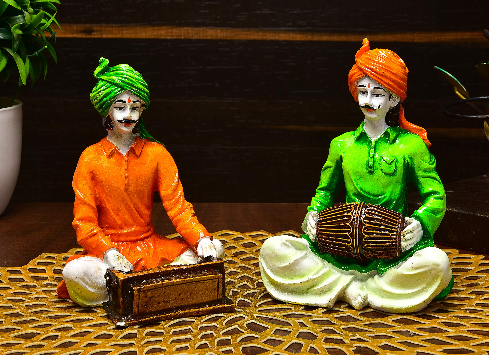
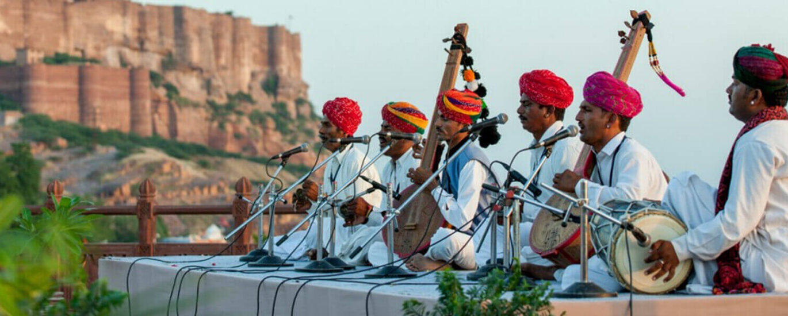
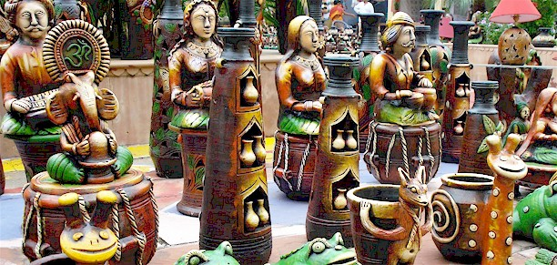
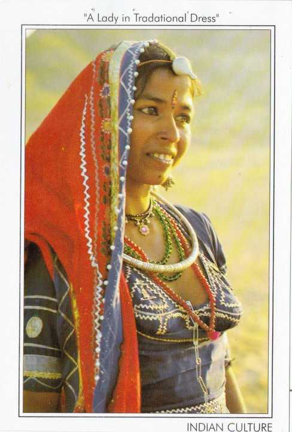
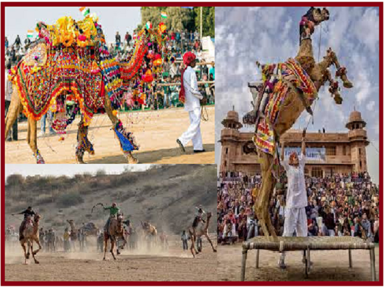

Rajasthan culture Rajasthan's heritage and culture are rich and vibrant Persian a native or inhabitant of ancient or modern Persia (or Iran), or a person of Persian descent Agriculture Rajasthan Agricultural Research Institute (RARI) is constituent research and teaching institute of Sri Karan Narendra Agriculture University,Jobner.This institute is located 15 km from the Jaipur railway station and central bus stand on the Jaipur-Tonk Highway.
Dance
Rajasthan is famous for its special entertainment communities whose profession is to entertain people with their dance and music performances depicting stories of romance and chivalry. Folk dance People of specific communities or castes practise these dance forms and are given credit for conserving them as an art form for ages. A perfect example of this category of folk dance is the kalbeliya dance performed by the people of the snake charmer community. Dhole Dance It is mainly performed in the Jalore region of Rajasthan.This famous folk dance is performed in the Thaakna style. It is generally performed by men of Dholi, Maali, Sarada, and BhilJai Narayan Vyas, a well-known veteran, promoted it. The dhol is the major instrument used during the performance.


Music
Dholak The dholak is the most commonly played musical instrument in Northern India. As accompaniment to song or other instruments, the dholak and other two-headed drums similar to it (nāl, dholki, dhol) are used all across the subcontinent in countless folk genres, devotional traditions, and family functions.
History of Modern Music
This type of music originates from the Rajasthan, one of the states of India and home to several important centers of Indian musical development, including Udaipur, Jodhpur and Jaipur. The region's music shares similarities both with nearby areas of India and the other side of the border, in the Pakistani province of Sindh.


Art
Religious themes
Rajasthanis are predominantly Hindu, Muslims and Jains. However, regardless of their religious segments, Muslim, Hindu and Jain Rajasthanis mingle with each other socially. Indic mythology , such as the Durga and her avatars, are commonly found, an example being the unveiling of Draupadi . Religious murals depicting female figuratives were often Shaktist in-nature. A prevailing theme of the divine (the Shakti) incarnating in feminine form (these unique forms are given various names, such as Kali) to battle with negative forces (that are hostile to the deities and mankind), including demons (such as Mahishasura )


Dress
Pagri
The
Pagri is one of the most important parts of men's attire in Rajasthan as it defines their social and economic status. Their colour, cloth, design and shape- everything symbolises individuality.
Odhni
Odhni is worn over the blouse, with one end tucked into the skirt and the other end on the head or the shoulders. It is made by a 2.5 to 3 meter long and 1.5 to 2-meter wide cloth, printed in different colours and designs. It varies in different religion and castes.
Ghaghara & Choli
This long skirt has a narrow waist and broad base, reaching just above the ankles covering the lower portion of the body. It is short to provide visibility to the foot ornaments. They come in many prints and colours. There are many pleats and studded ornaments in the Ghaghara itself. Like Pagaris, they are also found in cotton and printed in laharia. Mothra and chunari. The blouses or short kurtis which Rajasthani women wear are known as cholis. Also made with cotton or silk depending on the occasion, the reach to the waist depends on the caste, religion and age of women.



Festival
The Rajasthan typically observe the Desert Festival . ibrant desert festival in Jaisalmer is a wonderful opportunity to experience the sandstones and magical castles. The festival lasts for 3 days- one can experience fancy camel ride, participate in camel races, polo matches, turban tying competitions and various other things. The best part about the festival is the folk dance performance on the last day of the event. The major attractions of the desert festival of Jaisalmer include snake charmers, puppeteers, acrobats, folk performers, fire dancers and various other things that will capture your heart. Bikaner Camel Festival Join this festival and witness some of the best camel performances. Bikaner camel festival showcases the creative side of the people as they perform various activities like camel decoration, camel hair cutting, camel milking and camel dancing.


Back to home